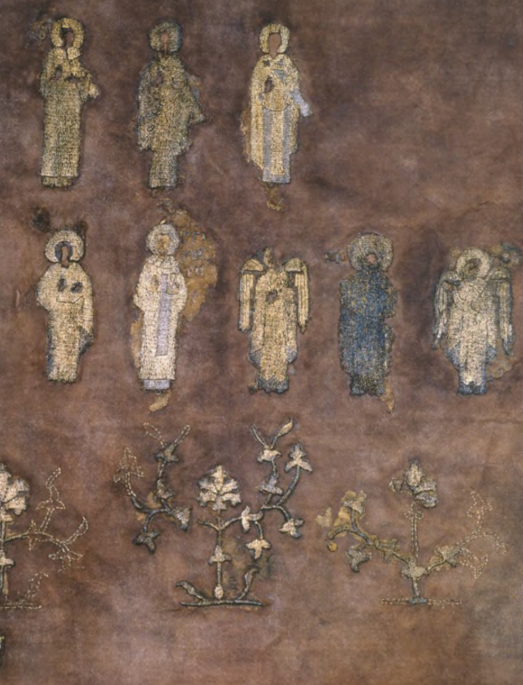
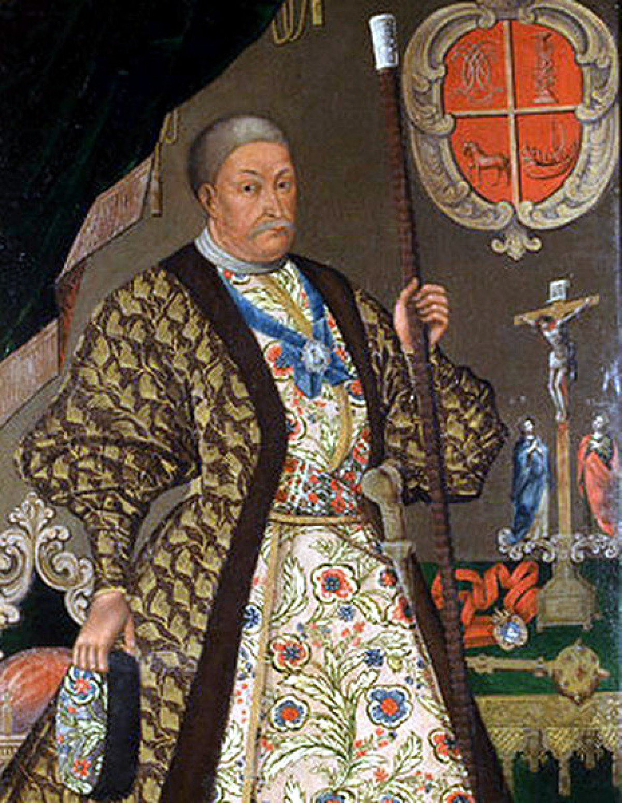

Українська вишивка — особлива. Вона розповідає про думки та почуття людини, відтворює світ краси та фантазій, передає поетичне осмислення природи й зберігає звичаї наших предків. Упродовж століть на вишивку впливали різні культури — вони й формували характерні візерунки та орнаменти, притаманні конкретному регіону України.
Коли в Київській Русі прийняли християнство, культура дещо змінилася: вона не скопіювала візантійські надбання, а переосмислила їх та інтерпретувала на свій лад, а також був запозичений звичай пишності та святковості літургійного шитва — так і поширилися монументальні орнаменти, яскраві кольори та дорогоцінні тканини, заткані або гаптовані золотом.
Вишивка в народному одязі посідала значне місце. Серед мотивів, що найчастіше зустрічалися в гаптуванні, — плетінки, узори з рослинних закрутків у вигляді латинської літери S, спіральні мотиви, зображення птахів, гепардів та левів.
У XVII-XVIII століттях культура набула рис бароко — завдяки цьому вбрання стало надзвичайно святковим та пишним. Представники заможної української шляхти обирали вишивку різноколірним шовком та гаптування золотою й срібною нитками. Так вони прикрашали сорочки, жупани, керсетки, очіпки тощо. Особливо поширилися рослинні мотиви в прикрашанні одягу — квіти, плоди, пуп’янки розміщувалися на плавних вигинах стебла. У вишивці також зустрічалися мотиви граната в поперечному і поздовжньому розрізах. Орнамент доповнювали вигини гілки з видовженим гострокінцевим листям. Поширеними були й мотиви гвоздики та лотоса із зубчастим листям.
Explore the Modern Connected Risk Platform

Risk Management
The gradual accumulation of information about

Compliance Management
The gradual accumulation of information about

SOX Management
The gradual information about atomic behaviour...

Internal Audit Streamlined
The gradual accumulation of information about